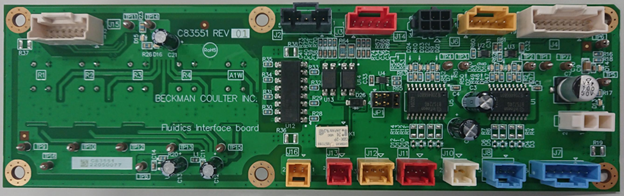
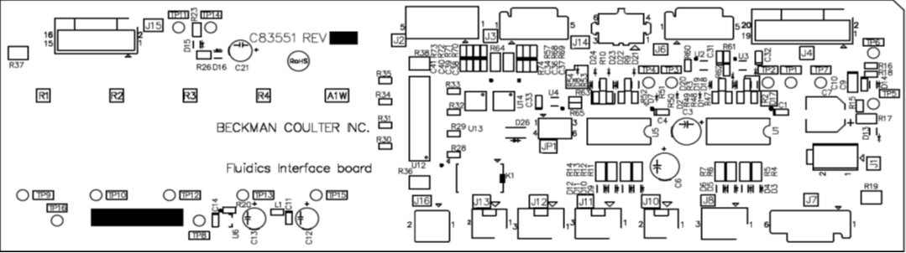
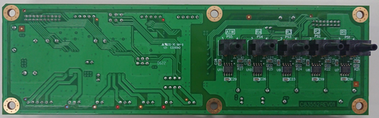

Fluidics IF Printed Circuit Board (PCB) Layout
This topic includes information about the locations and features of the DxI 9000 Fluidics IF printed circuit board (PCB).
| Table of Contents |
|---|
| Illustrations |
| Cable Connections |
| LEDs |
| Test Points |
Illustrations


Fluidics IF PCB pressure sensor side

Cable Connections
|
Location | Function |
Notes |
|---|---|---|
| J1 | 24V Power input | 24V (Purple) and Ground (Black) |
| J2 |
Intermediate Wash Buffer Tank Float SW input signal | 5 wires for Intermediate Wash Buffer Tank Float SW |
| J3 |
Waste Tank Float Switch input signal | 4 wires for Waste Tank Float Switch input signal |
| J4 | Input / Output signals to dMCC20(J8) | dMCC20 is implemented on the Fluidics Drawer |
| J6 | Output signals of Intermediate Wash Buffer Tank Float SW to dMCC20(J9, J10) | dMCC20 is implemented on the Fluidics Drawer |
| J7 | Output drive signals to Wash Buffer Supply Pump and Wash Buffer Selector Valves (Front/Back) | Wash Buffer Supply Pump and Wash Buffer Selector Valves are implemented on the Wash Buffer Drawer |
| J8 | Output drive signal to Wash Buffer Circulation Pump | Wash Buffer Circulation Pump is implemented on Fluidics Drawer |
| J10 | Output drive signal to Liquid Waste Pump | Liquid Waste Pump is implemented on Fluidics Drawer |
| J11 | Output drive signal to Reagent Pump R1-R2 Wash Tower | Reagent Pump R1-R2 is implemented on Fluidics Drawer |
| J12 | Output drive signal to Reagent Pump R3-R4 Wash Tower | Reagent Pump R3-R4 is implemented on Fluidics Drawer |
| J13 | Output drive signal to A1 Wash Station Waste Pump | A1 Wash Station Waste Pump is implemented on Fluidics Drawer |
| J14 | Input Trigger signals from dMCC20(J13) |
Trigger signals are input from dMCC20 and relayed in this board and output to DAQC by J15. Use to integrate pressure sensor signal by time in DAQC. |
| J15 | Output analog signals of pressure sensors to DAQC | Output Analog signals and Trigger signals and Input +12V/-12V/+3.3V for pressure sensors |
| J16 | Output Interlock signal of Intermediate Waste Tank Float Switch to MPDB (Main Power Distribution Board) Board. |
If the critical high level float switch of Intermediate Waste Tank was detected, the interlock signal is sent to MPDB and then the instrument interlock is activated. Open between Pos.1-2 of J16: Normal operation Short between Pos.1-2 of J16: Activate Interlock |
LEDs
|
Location |
Function |
Notes |
|---|---|---|
| D1, D2 |
Status of driver or connection for following devices. Wash Buffer Supply Pump, Wash Buffer Selector Valve (Front), Wash Buffer Selector Valve (Back), Wash Buffer Circulation Pump |
Typical operation:
Target devices: D1: Wash Buffer Supply Pump and/or Wash Buffer Selector Valve (Front) D2: Wash Buffer Selector Valve (Back) and/or Wash Buffer Circulation Pump |
| D3, D4, D5, D6 | Output Status of devices |
Typical operation:
D3: Wash Buffer Supply Pump D4: Wash Buffer Selector Valve (Front) D5: Wash Buffer Selector Valve (Back) D6: Wash Buffer Circulation Pump |
| D7, D8 |
Status of driver or connection for following devices. Liquid Waste Pump, D10: Reagent Pump 1-2, D11: Reagent Pump 3-4, D12: A1 Wash Station Waste Pump |
Typical operation:
Target devices: D7: Liquid Waste Pump and/or Reagent Pump for R1-R2 D8: Reagent Pump for R3-R4 and/or A1 Wash Station Waste Pump |
| D9, D10, D11, D12 | Output Status of devices |
Typical operation:
D9: Liquid Waste Pump D10: Reagent Pump for R1-R2 D11: Reagent Pump for R3-R4 D12: A1 Wash Station Waste Pump |
| D13 | 24V Power Supply signal |
24V enters the Fluidics IF board via J1 |
| D14 | 5V Power Supply signal |
5V enters the Fluidics IF board via J4 (From dMCC20) |
| D15 | 12V Power Supply signal |
12V enters the Fluidics IF board via J2 (From DAQC) |
| D16 | -12V Power Supply signal |
-12V enters the Fluidics IF board via J2 (From DAQC) |
| D17, D18, D19, D20 | Input Status of drivers for devices |
Typical operation:
D17: Wash Buffer Supply Pump D18: Wash Buffer Selector Valve (Front) D19: Wash Buffer Selector Valve (Back) D20: Wash Buffer Circulation Pump |
| D21, D22, D23, D24 | Input Status of drivers for devices |
Typical operation:
D21: Liquid Waste Pump D22: Reagent Pump for R1-R2 D23: Reagent Pump for R3-R4 D24: A1 Wash Station Waste Pump |
Test Points
|
Location |
Function |
Notes |
|---|---|---|
| TP1, TP2 |
Status Output Voltage of driver for following devices. Wash Buffer Supply Pump, Wash Buffer Selector Valve (Front), Wash Buffer Selector Valve (Back), Wash Buffer Circulation Pump |
Should provide around 0V with normal operation. If the voltage is not around 0V, the failure of driver on this board or device is disconnected. |
| TP3, TP4 |
Status Output Voltage of driver for following devices. Liquid Waste Pump, Reagent Pump for R1-R2, Reagent Pump for R3-R4, A1 Wash Station Waste Pump |
Should provide around 0V with normal operation. If the voltage is not around 0V, the Failure of driver on this board or device is disconnected. |
| TP5 | 24V power | Should provide +24V signal to Fluidics IF board. |
| TP6 | 5V power | Should provide +5V signal to Fluidics IF board. |
| TP7 | Ground for Digital signal | Use as a digital ground when connecting to other test points of digital signals (TP1 ~ TP6) |
| TP8 | 10V Reference |
Should provide +10V Reference voltage. Use as a power for pressure sensors. |
| TP9 | Output analog signals of pressure sensor (R1: Reagent Channel 1 Vacuum Pressure) | Vacuum pressure of R1 Wash tower |
| TP10 | Output analog signals of pressure sensor (R2: Reagent Channel 2 Vacuum Pressure) | Vacuum pressure of R2 Wash tower |
| TP11 | 12V power |
Should provide +12V signal to Fluidics IF board. +12V is provided from DAQC |
| TP12 | Output analog signals of pressure sensor (R3: Reagent Channel 3 Vacuum Pressure) | Vacuum pressure of R3 Wash tower |
| TP13 | Output analog signals of pressure sensor (R4: Reagent Channel 4 Vacuum Pressure) | Vacuum pressure of R4 Wash tower |
| TP14 | -12V power |
Should provide -12V signal to Fluidics IF board. -12V is provided from DAQC. |
| TP15 | Output analog signals of pressure sensor (A1: A1 Wash Vacuum Pressure) | Vacuum pressure of A1 Wash station |
| TP16 | Ground for Analog signal | Use as an analog ground when connecting to other test points of analog signals (TP8 ~ TP15) |